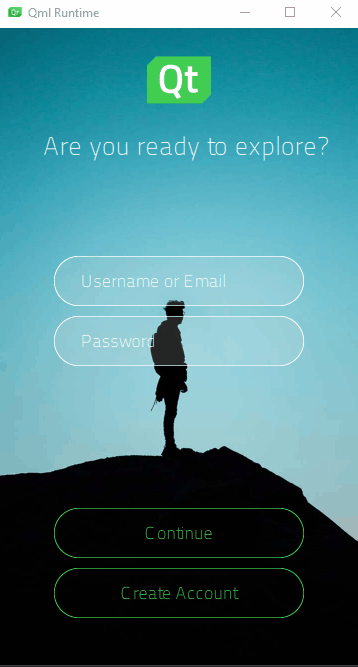

Log In UI - Timeline
Illustrates how to use the timeline and states to animate UI components.

Log In UI - Timeline is the fourth in a series of tutorials that build on each other to illustrate how to use Qt Design Studio to create a simple UI with some basic UI components, such as pages, buttons, and entry fields. The fourth part of the tutorial describes how to use the timeline and states to animate UI components.
In Log In UI - States, you learned how to use states to simulate page changes in a UI and connections to provide user interaction with it. In this part, you will now learn another way of animating the UI by creating timeline animations that you bind to states.
The starting point for this tutorial is the completed Log In UI - States project. You can download the project from here.
Additionally, you can download the completed project of this tutorial from here.
The Learn More sections provide additional information relevant to the task at hand.
Animating UI Components
In Log In UI - States, you changed the visibility property in different states to simulate changing pages. To make sure that those changes won't interfere with the changes to the opacity property you will make next, you will first remove the states.
Then, you will add a timeline and insert keyframes for the opacity property to hide the Retype Password field on the login page and the Create Account button on the account creation page. Because we want the retype password field to appear to slide down from the password field, you will also need to insert a keyframe for its anchor margin property. To be able to animate the anchor, you also need to pull out the fields from the column component and anchor them to the rectangle and to each other instead.
To preview the changes that you make to the UI while you make them, select the (Show Live Preview) button on the Design mode toolbar or press Alt+P.
Replacing Columns with Anchors
First, you will prepare the Screen01 component for adding animation:
- Double-click Screen01.ui.qml in Projects to open it in the 2D view.
- In the States view, select login, and then select
 to remove the state. Repeat for the createAccount state.
to remove the state. Repeat for the createAccount state. - Select username in Navigator, and then select to move it into the parent rectangle to prepare for deleting the fields column component instance.
- Select
 to move username below tagLine in Navigator to preserve the component hierarchy.
to move username below tagLine in Navigator to preserve the component hierarchy. - Repeat step 3 and 4 for password and repeatPassword.
- Select fields in Navigator and press Delete to delete it.
- Select username in Navigator to display its properties in Properties.
- Select Layout > to anchor the top of username to the bottom of tagLine in the Target field. Qt Design Studio will suggest an appropriate margin based on the current position of the field on the y axis, 170 pixels.
- Select
 to anchor username horizontally to its parent in the Target field.
to anchor username horizontally to its parent in the Target field. - Select password in Navigator to display its properties in Properties.
- Select Layout > to anchor the top of password to the bottom of username in the Target field with a 20-pixel margin.
- Select to anchor password horizontally to its parent in the Target field.
- Repeat the above steps to anchor the top of repeatPassword to the bottom of password with a 20-pixel margin and to anchor it horizontally to its parent.
- Select File > Save or press Ctrl+S to save your changes.
You could also animate the y-position property of the repeat password field for a similar effect. In that case, you would need to use absolute positioning for the field. This is less flexible if you export your design from a design tool, such as Adobe Photoshop, and decide to change your design and export it again at some point. In that case, the margins would probably stay the same, even if the positions of the fields on the page would change.
Screen01 should not display visible changes in the 2D view:

Adding a Timeline and Animation Settings
You are now ready to add the timeline.
To add a timeline with settings for running the animation:
- Select View > Views > Timeline to open the Timeline view.
- In Timeline, select
 to add a 1000-frame timeline and settings for running the animation.
to add a 1000-frame timeline and settings for running the animation. - In the Animation ID field, enter toCreateAccountState.
- Deselect the Running in base state check box because you want the animation to run only after the user clicks the Create Account button. You can use the default settings for the other fields.
- Select Close in the Timeline Settings view to save the timeline and the animation settings.
Next, you will record the animation in Timeline.
Inserting Keyframes
You will now insert keyframes and record property changes in Timeline:
- Select repeatPassword in Navigator to display its properties in Properties.
- In Visibility > Opacity, select > Insert Keyframe to insert a keyframe for the opacity property of the component.

- In Timeline, check that the playhead is in frame 0, and select the
 (Per Property Recording) button for the opacity property of repeatPassword to start recording property changes.
(Per Property Recording) button for the opacity property of repeatPassword to start recording property changes. - In the field next to the opacity property name on that same line, type 0 to hide the button, and press Enter to save the value.
- Move the playhead to frame 1000 and change the opacity value to 1 to show the button.
To fine-tune the value of a keyframe, you can also right-click the keyframe marker
 , and select Edit Keyframe.
, and select Edit Keyframe. - Select the record button again to stop recording property changes. If you forget this, all the following changes will be recorded, and the results will be unpredictable.
- Select createAccount in Navigator, and repeat the above steps to insert a keyframe for the Opacity property of the button and to record changes for it. However, this time the opacity value needs to be 1 in frame 0 and 0 in frame 1000.
- Select File > Save or press Ctrl+S to save your changes.
When you move the playhead along the timeline, you can see how the create account button fades out while the repeat password field fades in.
You will now animate the top anchor margin of the repeat password field to make it appear to slide down from the password field.
Animating Anchors
To animate the top anchor margin of the repeat password field:
- Select repeatPassword in Navigator to display its properties in Properties.
- In Layout > Margin (under ), select > Insert Keyframe to insert a keyframe for the top anchor margin of repeatPassword.
- In Timeline, check that the playhead is in frame 0, and select the record button for the anchors.topMargin property of repeatPassword.
- In the field next to the property, set a negative value for the top anchor margin, -100, to place repeatPassword on top of password.
- Move the playhead to frame 1000 and change the top anchor margin to 20, so that, combined with the change in the Opacity value, repeatPassword appears to slide down and settle below password.
- Select the record button again to stop recording property changes.
- Select File > Save or press Ctrl+S to save your changes.
Adding Easing Curves
You will now add an easing curve to the anchor margin animation that will make the transition seem smoother:
- Click the keyframe marker for the anchors.topMargin property at frame 1000 on the timeline to select it.
- Right-click the keyframe marker to open a context menu, and select Edit Easing Curve to add an easing curve to the animation.
- In Easing Curve Editor, select easeOutSine.
- Select OK to close the editor.
When you attach easing curves to keyframes, the shape of the keyframe marker changes from to  .
.
Your timeline should now look something like this:
Next, you'll create states for the login and account creation pages and bind them to the animation settings.
Binding Animation to States
You will now bring back the states in the States view and bind them to the animation settings in Timeline:
- In States, select twice to add two states called login and createAccount. You don't need to make any property changes this time because you'll bind the states to property animations.
- In States, select for login to open the Actions menu, and then select Set as Default to determine that the login state is applied when the application starts.
- In Timeline, select the
 (Timeline Settings (S)) button on the toolbar (or press S) to open the Timeline Settings dialog.
(Timeline Settings (S)) button on the toolbar (or press S) to open the Timeline Settings dialog. - Double-click the cell in the Timeline column on the createAccount row, and select timeline in the list.
- Double-click the cell in the Animation column on the createAccount row, and select toCreateAccountState.
- Click Close to save the timeline settings.
- Select File > Save or press Ctrl+S to save your changes.
In the live preview, you can now click the Create Account button to go to the account creation page.
Learn More - Timeline
The Qt Quick Timeline module provides components to use timelines and keyframes to animate component properties in UIs. Animating properties enables their values to move through intermediate values instead of immediately changing to the target value.
The Keyframe component specifies the value of a keyframe on a timeline. Qt Design Studio automatically adds keyframes between two keyframes, and sets their values evenly to create an appearance of movement or transformation.
An easing curve can be attached to the keyframe to change the appearance of the animation. For more information about easing curve types, see the documentation for easing curves.
To be able to use the functionality of Timeline components, Qt Design Studio adds the following import statement to the UI files where it uses the components:
import QtQuick.Timeline 1.0
All the properties and functions of the components from this module are available in the Design mode, and therefore it is enough to learn how to use Timeline, as described in Creating Timeline Animations.
Next Steps
For more examples about using timelines, see Examples.
Files: